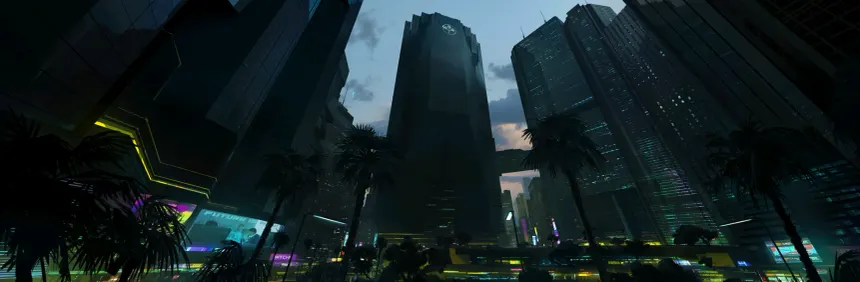
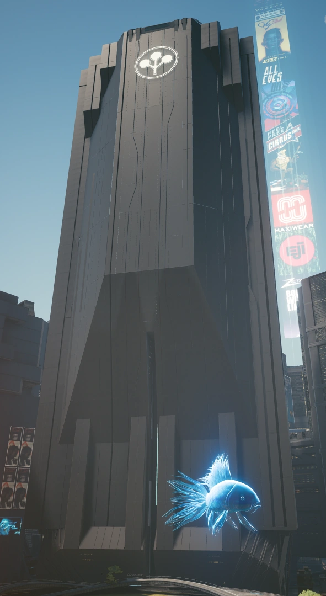

QUEM SOMOS NÓS?
Para alguns um monumento ao poder corporativo,
para outros um símbolo de opressão, a sede de
Arasaka na Costa Oeste é o coração das operações
financeiras e militares da megacorporação em
ambas as Américas.
Destruída em 2023 em um bombardeio realizado
por Johnny Silverhand, a torre mais tarde se
ergueu dos escombros como uma prova do triunfo
final da corporação sobre seus inimigos.
Se a história foi escrita pelos vencedores,
então eles garantiram que esta nota de rodapé
específica fosse escrita pelas mãos dos melhores
arquitetos do mundo.
O majestoso monólito de aço e concreto de
2.034 pés (620 metros) eleva-se sobre o Corpo
Plaza, lançando uma sombra sobre todas as ruas
de Night City.
"A paz não é um acaso. É um produto Arasaka."

Layout da Torre
A Torre Arasaka é um edifício único que se
ergue a uma altura de 620 m (2034 pés) e possui
140 andares.
Localizada na Praça Corporativa
(Corporate Plaza), é o edifício mais alto
de Night City.
Estrutura e Níveis
Seção de Amortecedores Sísmicos:
Abaixo do subsolo, há um sistema de
amortecedores sísmicos que protege o edifício
contra terremotos.
Andares -07 a -06 |
Controle de Operações Netrun
Mikoshi:
As operações de Netrunners também guardam
o acesso ao Mikoshi da Torre Arasaka de
Night City.
Andares -05 a -01 |
Estacionamento
Andar 01 |
Saguão (Lobby)
A entrada principal está sob guarda constante
com guarda-costas dentro e fora, bem como uma
ACPA da Arasaka.
----- ENTRADA DA TORRE -----

Há banheiros e também corredores que levam
a outras salas restritas.
Um grande telão acima dos elevadores exibe
constantemente as conquistas da Corporação
Arasaka.
Dentro do saguão, ouve-se um locutor
transmitindo propaganda da Arasaka em japonês.
Plantas japonesas holográficas com um brilho
vermelho podem ser vistas ao lado dos sofás.
Cada elevador possui telas que exibem um
documentário em duas partes sobre Saburo Arasaka.
|